The complete atlas
The Reading Shelf
Sixty small invitations to see the world a little differently. Take your time. Follow a thread.
60 illustrated discoveries60 discoveries to explore

The Ship That Kept Its Name
A ship can change plank by plank so slowly that nobody marks the moment it becomes a different ship. But has it?
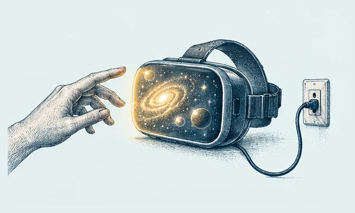
Would You Plug In?
A machine offers you a life that feels completely wonderful. You will never know it is simulated. Would you enter?

The Switch and the Push
A runaway trolley is heading toward five people. You can divert it onto another track, where one person stands. Do you turn the switch?
Are Your Memories You?
Suppose an accident erased every memory of your childhood. Would you still be the person who lived it?
The Rules Behind the Veil
You must choose the rules for a new society, but you do not know who you will be in it.
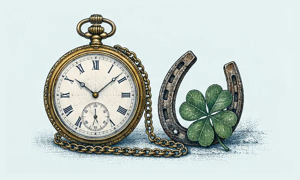
The Lucky Clock
You glance at a clock and see 3:00. It stopped yesterday, but by sheer luck it is 3:00 again. Did you know the time?
Two Prisoners, One Bad Outcome
Two prisoners are questioned separately. Each must decide whether to stay silent or accuse the other. Neither can know what the other will choose.
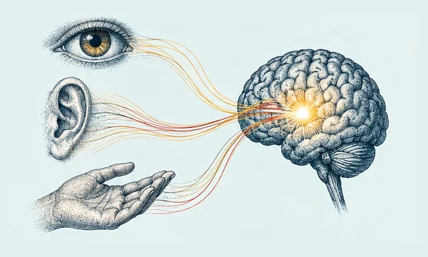
How Do You Know I Feel?
You know what a headache feels like from the inside. But how can you know that another person feels one too?
One Grain at a Time
A million grains make a heap. Remove one grain: surely it is still a heap. Keep going. When does the heap disappear?
The Predictor’s Two Boxes
A remarkably accurate predictor has already guessed what you will choose. Now two boxes wait on the table.

The Book That Kept Eighteen Plays Alive
A book can become a rescue boat without looking like one. Shakespeare’s First Folio appeared in 1623, seven years after his death, gathering plays that had lived on stage and in scattered print.

Before Wonderland Had a Cheshire Cat
Before there was a Cheshire Cat, there was a handwritten book made for one particular child. Lewis Carroll’s Alice’s Adventures Under Ground began as a story told to Alice Liddell and her sisters during a boat trip in 1862.

Frankenstein, Written in Layers
Frankenstein did not arrive fully formed from a stormy summer. Its paper trail shows Mary Shelley turning an early story into a novel through notebooks, revisions, and successive fair copies.

Peter Rabbit Began as a Letter
Peter Rabbit first hopped into the world by post. In 1893, Beatrix Potter sent an illustrated story to Noel Moore, a five-year-old recovering from scarlet fever, drawing on her pet rabbit, Peter Piper.

Jane Austen Before the Drawing Room
Long before the quiet wit of her novels, Jane Austen was writing uproarious stories for a lively audience at home. Three notebooks preserve short pieces she wrote from childhood into her teens.

Proust’s Novel in the Margins
The printed page looks finished; the proof sheet shows thought still moving. Marcel Proust’s In Search of Lost Time took shape through notebooks, preliminary drafts, and heavily corrected proofs.

The Tale That Became a Thousand-Year Conversation
A novel can outlive its first readers by becoming a source of new art. The Tale of Genji, written by Murasaki Shikibu at the early eleventh-century imperial court, has inspired artists across a millennium.

A New Machine in an Old Book’s Clothing
The Gutenberg Bible announced a new technology in a familiar visual language. Printed in Mainz around 1455, it used movable metal type, yet its pages imitated the dense Gothic script of handmade books.

A Poem’s Many First Attempts
A poem is not always born in its final rhythm. Drafts of Langston Hughes’s “The Ballad of Booker T” let readers see the poet testing and revising his work within the creative world of the Harlem Renaissance.

Middle-earth, Before It Was a Map in Your Mind
A fictional world can be drawn as well as written. The Bodleian Libraries’ Tolkien exhibition brought together draft manuscripts, illustrations, and maps made for The Hobbit and The Lord of the Rings.

A Shipwrecked Machine That Mapped the Sky
A corroded lump from an ancient shipwreck turned out to be a pocket-sized model of the heavens.

The Inventor Behind the Flat-Bottomed Paper Bag
The grocery bag's neat, boxy base was once a hard mechanical problem—and a man tried to claim the solution.

The Fossil Hunter Who Changed the Prehistoric World
On England's stormy shore, a teenager uncovered bones that made people reconsider what had once lived on Earth.

Ada Lovelace Saw Beyond the Numbers
A machine that never got built still sparked a vision of what computers might one day do.

Alice Ball's Breakthrough—and the Credit She Nearly Lost
At 23, chemist Alice Ball transformed an old remedy into a treatment patients could receive by injection.

The White Flecks That May Help Roman Concrete Mend
A crumbly white speck inside ancient concrete may be part of why some Roman structures endured for centuries.

An Ancient Temple Had a Coin-Operated Dispenser
Long before snack machines, one ingenious device made a coin release a measured flow of water.

London's First Traffic Light Ran on Gas
Before cars filled city streets, London tried to keep horse-drawn traffic moving with a gas-lit signal.

The Engineer Who Sent London's Sewage Underground
In the summer of 1858, the smell of the Thames helped push London toward a vast underground rebuild.

The Botanist Who Made a Book of Blue Seaweed
A British botanist turned seaweed into delicate white silhouettes on brilliant blue pages—and helped invent a new kind of book.

The Crow That Remembers Your Face
A crow may spot you once and remember you long after the moment has passed.
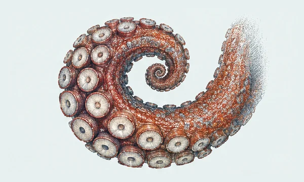
An Octopus Arm Has a Mind of Its Own
An octopus does not steer eight arms like a puppeteer pulling eight strings.
The Slime Mold That Found the Short Way
A creature with no brain can still leave a maze with a surprisingly tidy route.
Sunflowers Follow Time as Well as Sunlight
A young sunflower does more than turn toward the bright side of the sky.
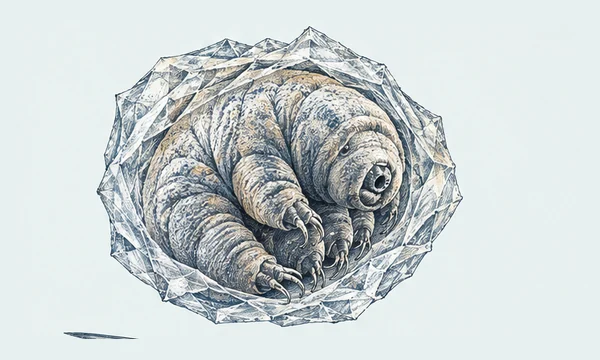
A Tiny Animal’s Pause Button
When a puddle dries, some tiny water bears can curl into a waiting form.
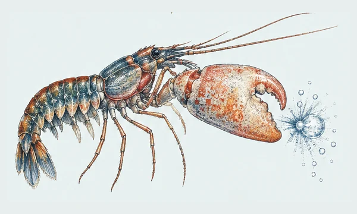
The Shrimp That Snaps a Bubble
A pistol shrimp’s claw can make a sound by shaping a burst of water.
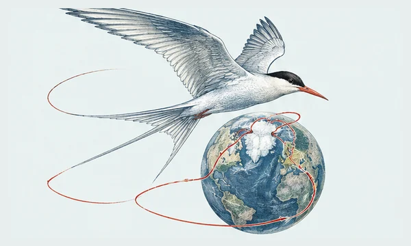
The Tern’s Long Loop Between Poles
A small seabird can spend its year traveling between the Arctic and the far south.
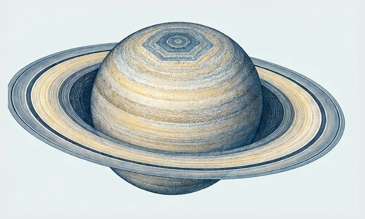
Saturn’s Persistent Six-Sided Jet
At Saturn’s north pole, a jet stream traces a shape that looks drawn with a ruler.
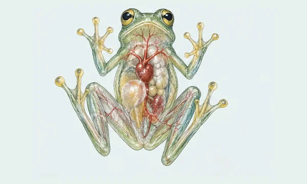
The Glass Frog’s Hidden Blood
A sleeping glass frog can become more see-through without changing its skin.
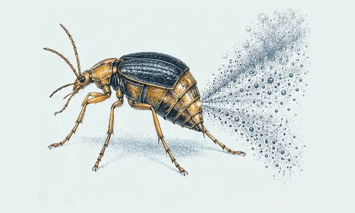
The Beetle with a Pulsing Defense
A bombardier beetle’s defense works in pulses, like a tiny living spray machine.

The Host Knows Where the Goat Is
Two doors remain closed, so switching feels like a coin toss. It isn’t—provided the host follows the rules.

The Room Is Full of Birthday Pairs
With 23 people in a room, a shared birthday is about as likely as not. The surprising part is how many pairs are quietly being compared.

When the Average Reverses the Story
A treatment can look better in every subgroup—and still look worse when all patients are pooled.

Why Numbers Favor the Small First Digit
In many datasets, numbers begin with 1 more often than 9. It sounds like nature has a favorite digit, but scale is doing the work.

Why Extreme Results Often Calm Down
A student gets an unusually low score, studies hard, then scores closer to their usual level. Did the study session cause all the improvement? Not necessarily.

A Positive Test Is Not the Whole Story
A test can catch every case and still produce mostly false alarms when the condition is rare.

The Coin Doesn’t Remember
After eight heads in a row, tails can feel overdue. For a fair coin, the next toss still has a 50–50 chance.

The Smaller Object Feels Heavier
Lift two boxes with the same mass, one small and one large. The small one may feel heavier—even when you know the scale says otherwise.

The Red Mug Under Blue Light
Change the light in a room and the wavelengths reaching your eyes change too. Yet your red mug usually still looks red.

Why Your Friends Seem More Popular
On average, your friends may have more friends than you do. It is not a trick of social media; it is a feature of how networks are sampled.

What Is Dark Matter Made Of?
Galaxies behave as though they contain far more mass than their shining stars and gas reveal. The missing ingredient is called dark matter, but the name describes a puzzle, not a substance we have identified.
What Is Making the Universe Expand Faster?
The universe is expanding, and observations show that its expansion has accelerated over cosmic time. Astronomers call the cause dark energy, a label for an observed effect whose underlying nature remains unknown.
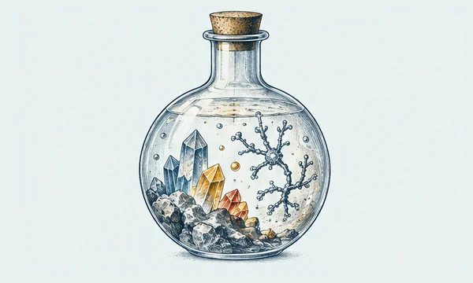
How Did Life Begin on Earth?
At some point, chemistry on the young Earth crossed into biology. We know life exists and evolves, but no one has reconstructed the sequence that first turned nonliving chemistry into a self-sustaining, evolving system.
Why Does Brain Activity Feel Like Anything?
A brain can detect light, remember a song, and report pain. But why should physical activity in a brain be accompanied by an inner point of view—by the felt redness of red or the sting of pain? That question remains disputed.
Why Did Matter Survive the Big Bang?
Matter and antimatter annihilate when they meet. If the early universe made equal amounts of each, they should have mostly erased one another, leaving radiation—and no stars, planets, or people. Yet a little matter remained.
What Happens to Information in a Black Hole?
A black hole can swallow matter, and quantum theory says information about physical states should not simply vanish. Hawking’s calculation of black-hole radiation exposed a conflict between that expectation and gravity’s most extreme objects.
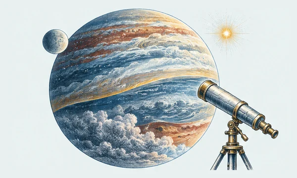
Is There Life Beyond Earth?
Thousands of planets beyond our solar system are now known, and the galaxy is likely to contain vastly more. But despite that growing census, Earth remains the only world where life has been confirmed.
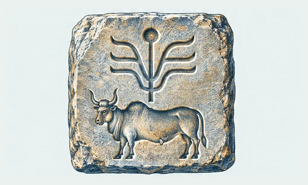
What Do the Indus Signs Say?
The cities of the Indus civilization left behind seals, pottery, and tablets marked with repeated signs. Archaeologists can study the objects and their settings, but the symbols have not yielded an accepted reading of the words or language behind them.
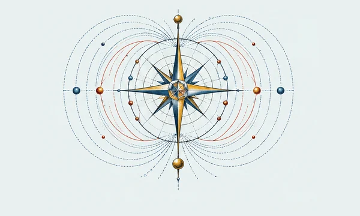
Where Did the Universe’s Magnetic Fields Begin?
Magnetic fields thread stars, galaxies, and even the space between galaxies. Astronomers can detect their effects across cosmic distances, but the origin of the universe’s first large-scale fields is still unknown.
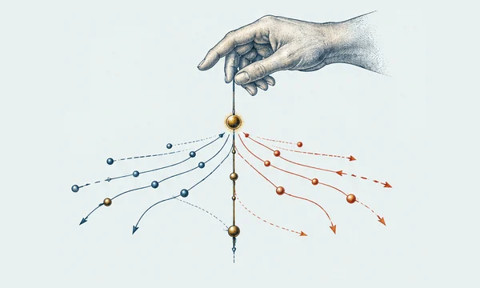
Can We Be Free in a Law-Governed Universe?
If every choice has causes, does that make it less ours? Philosophers have argued for centuries about whether free will can coexist with determinism, the idea that the past and the laws of nature fix what happens next.
An unplanned detour
What will you find?
Sometimes the best place to begin is anywhere.